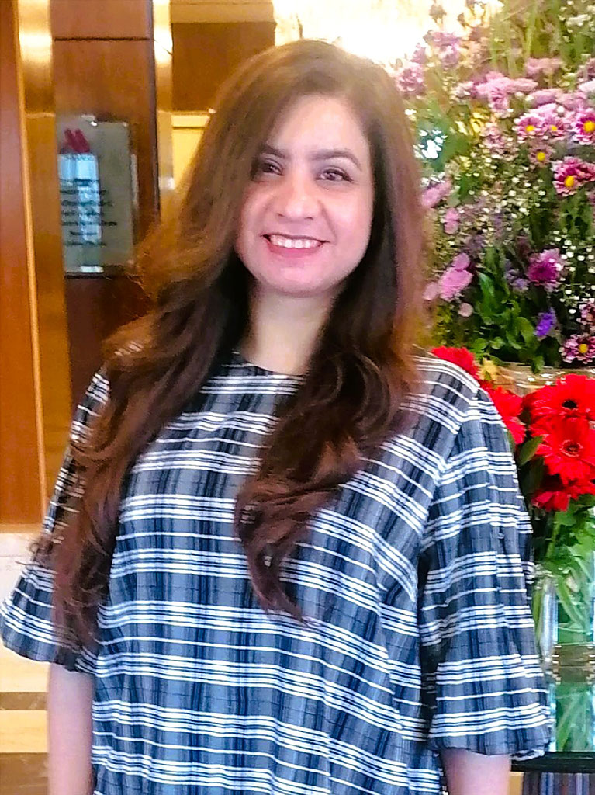

Visual artist · Lahore
FaizaGondal
Tradition is not a fixed inheritance. In this studio it is a living language.
Miniature, fresco, and illumination, carried into a contemporary practice on wasli, linen, and canvas. Each painting keeps its history on the back.
The canvases
Twenty-six paintings. Open one and turn it. The medium, the year, and the story are written on the verso, as a miniature carries its note on the back.
The wall moves on its own. Slide to travel, hold to stop, tap a painting to open it.

Practice
A discipline, kept personal.
Faiza Gondal is a Lahore-based artist whose work begins in Mughal miniature and refuses to leave the present. Historical visual traditions and private experience sit on the same sheet. She does not treat the old methods as a costume. They are how she looks.
She studied Arts Journalism at the University of the Punjab, a training that still shows in the way a painting holds a narrative without closing it. At the National College of Arts, Lahore, she studied traditional miniature. Around that sit fresco and fresco-secco, naqashi and tezhib, kashkari on ceramic and stone, and oil on canvas.
The studio works mainly on handmade wasli, and also on watercolour sheet, canvas, and cloth. Colour is prepared by hand: gouache from organic pigment and mineral powder bound with gum Arabic, washes of tea and coffee, gold and silver leaf. The subject decides the form. A library, a grandmother’s khess, a bee in the hills above Islamabad, a line of Punjabi Sufi verse.
She has shown nationally and internationally, joined residencies, and taught through workshops. Symbiotic Awakening was selected for the permanent collection of the Pakistan National Council of the Arts, Islamabad, with a Certificate of Honour. Thread of Connection was shown at Novotel Sharjah in 2025.
- Ground
- Handmade wasli, watercolour sheet, canvas, upcycled linen.
- Colour
- Studio gouache, mineral white, tea and coffee, gold and silver leaf.
- Training
- University of the Punjab. National College of Arts, Lahore.
- Held
- PNCA permanent collection. Private collections. Sharjah, 2025.
Contact
The studio is in Lahore.
For a viewing, a loan, or a conversation about the work.
Instagram · mini.arcui